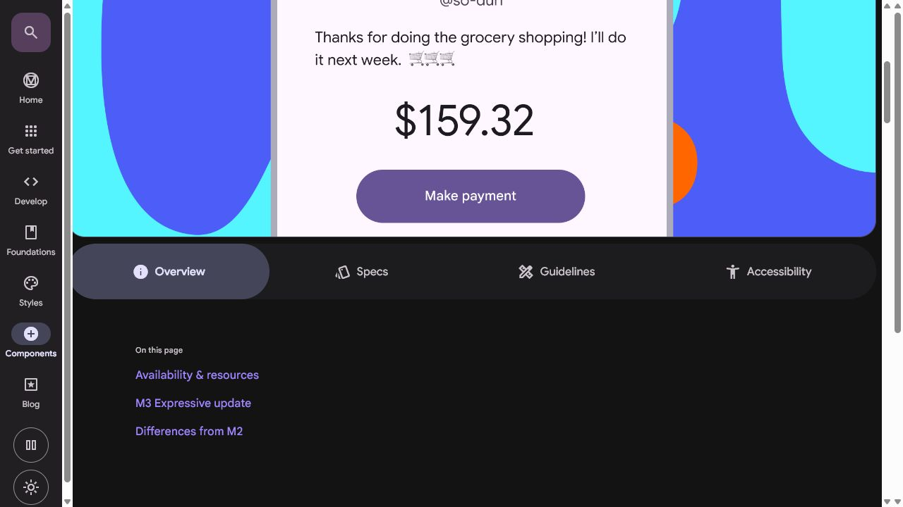
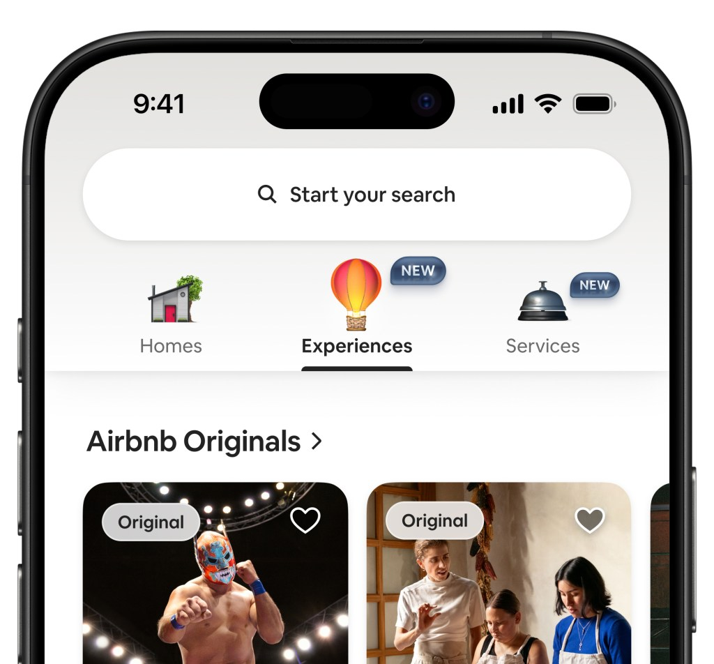
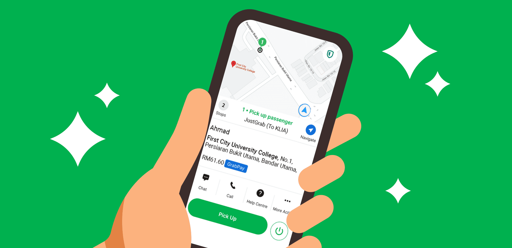
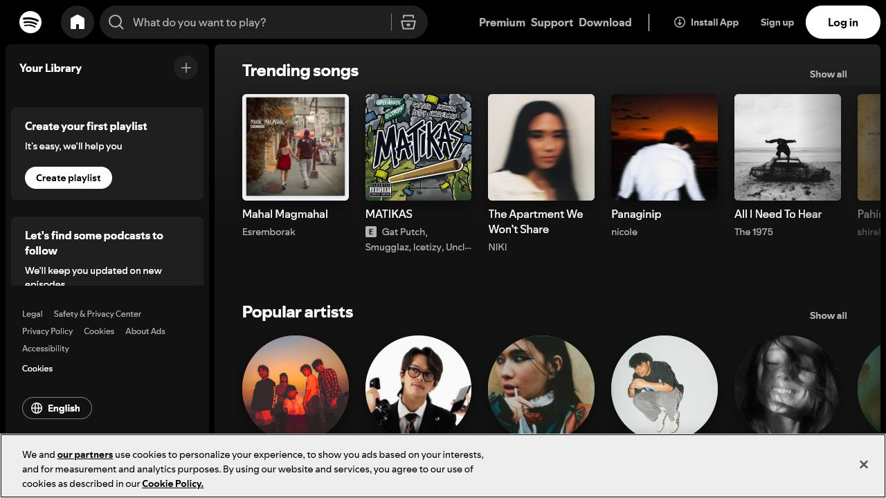

Your study dashboard
Tasks due4
Completed12
Focus time3h
Database proposal · Due tomorrow
UI wireframe review · Today
Design Principles for App Developers
Student Edition - expanded lesson explanations
Today: making those screens LOOK good.
User Interface
How the app LOOKS
User Experience
How the app FEELS
Database proposal · Due tomorrow
UI wireframe review · Today
Clear UI: groups related information and makes the next action obvious.
Confusing UI: competes for attention and hides the user's priority.
UI = How the restaurant looks: decor, plates, menu design, lighting
UX = The whole experience: how quickly you're seated, how easy the menu is to read, how fast food arrives, how you feel when you leave
A beautiful restaurant (good UI) with terrible service (bad UX) still fails. You need BOTH.
A polished screen can still create a poor experience if the task is confusing, slow, or unforgiving.
Users can quickly recognize the screen's purpose and available actions.
Clear steps, feedback, and error handling help users finish their task.
Consistency and readable information make the app feel dependable.
The goal is not decoration. The goal is to reduce confusion and support the user's purpose.
Contrast
Make important things stand out
Alignment
Everything connected visually
Repetition
Consistent patterns throughout
Proximity
Related items grouped together
Make different things look DIFFERENT.
Rule: If things are not the same, make them VERY different. No "kinda different."
Every element should be visually connected to something else.
Rule: Nothing should look randomly placed.
Repeat visual elements throughout your app for consistency.
Repeat these:
Why it works:
Related items should be grouped together. Unrelated items should have space between them.
Rule: Proximity implies relationship.
Contrast: the Submit button is visually stronger than Cancel.
Alignment: labels, fields, and buttons share the same left edge.
Repetition: every field uses the same label style, border, and spacing.
Proximity: each label sits close to its field, while different sections have more space.
The principles are not separate decorations; together they make the form easier to scan and complete.
Your brand color. Used for buttons, links, highlights.
Complement. Used for accents, secondary actions.
Background, text, borders. Black, white, gray.
| Color | Feeling | Used For |
|---|---|---|
| Blue | Trust, calm, professional | Facebook, LinkedIn, banks |
| Green | Growth, success, money | GCash, Grab, success states |
| Red | Urgency, error, danger | Notifications, errors, delete |
| Yellow/Orange | Energy, warning, fun | Warnings, CTAs, food apps |
| Purple | Creativity, premium | Creative apps, premium features |
60% — Dominant color (background, large areas)
30% — Secondary color (cards, sections, text)
10% — Accent color (buttons, links, highlights)
This creates visual balance. Too many colors = chaotic. Too few = boring. 3-4 colors max for most apps.
Primary buttons, active navigation, important links.
Backgrounds, cards, borders, headings, and body copy.
Success, warning, and error colors with matching icons or text.
Accessibility rule: never use color alone to communicate meaning. Pair it with a label, icon, pattern, or position.
Clean, modern, easy to read on screens
Use for: body text, buttons, most UI
Traditional, elegant, authoritative
Use for: headings, blogs, premium feel
Rule: Use 2-3 different sizes max per screen. More sizes = visual chaos.
FlutterFlow has Google Fonts built in. You can change fonts in 2 clicks.
Empty space is NOT wasted space. It makes content breathable and readable.
Cramped design = amateur look. Space = professional.
Guide the user's eye from most important to least important:
| Level | How to Achieve | Example |
|---|---|---|
| 1st (Primary) | Biggest, boldest, colored | Page title, main CTA button |
| 2nd (Secondary) | Medium size, semi-bold | Section headers, prices |
| 3rd (Tertiary) | Normal size, regular weight | Body text, descriptions |
| 4th (Minimal) | Small, light color | Timestamps, captions |
Show that the app is working and prevent repeated actions.
Explain why no content appears and suggest a useful next step.
Confirm what changed and where the user can continue.
Describe the problem in plain language and provide recovery.
These states are part of UX, not optional polish.
⌂
Logo + primary navigation in a consistent header or sidebar
＋
Primary action visible in the page header
↻
Refresh or auto-update for changing records
⌖
Hover and focus states for interactive controls
✓
Toast or inline message after an action
…
Loading state while the browser waits
The course project uses familiar responsive-web patterns so it works clearly on laptops and narrower screens.
Reusable buttons, cards, dialogs, menus, tabs, and chips.
Rules for spacing, elevation, motion, typography, and color.
States, contrast, touch targets, and behavior are documented together.

How the human brain perceives visual information:
Similar items look like they belong together. Same colored buttons = same type of action.
Brain fills in gaps. You don't need borders on all sides to see a "box."
Eyes follow lines and curves. Horizontal lists, progress bars.
Users distinguish main content from background. Modals, overlays use this.

Strong search hierarchy, visual cards, and familiar top-level tabs make discovery obvious.
Official Airbnb Newsroom
A map-first layout keeps route context visible while one green action receives priority.
Official Grab product guide
Dark surfaces reduce distraction while artwork and repeated shelves organize discovery.
Official Spotify interfaceNot all users have perfect vision, motor skills, or tech literacy:
The next lesson introduces low-fidelity wireframes: quick screen plans made from boxes, labels, and simple navigation connections.
Wireframes turn the screen list and user flow into a visible interface structure before detailed styling begins.